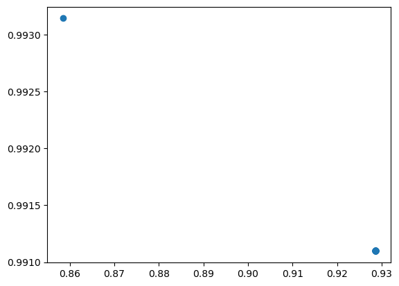
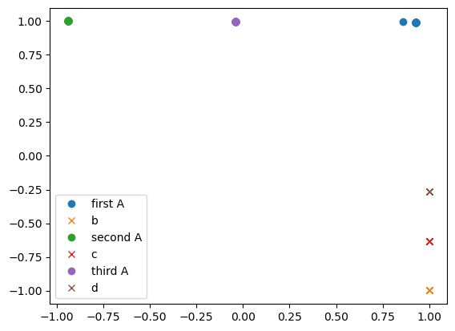
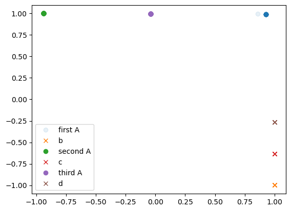
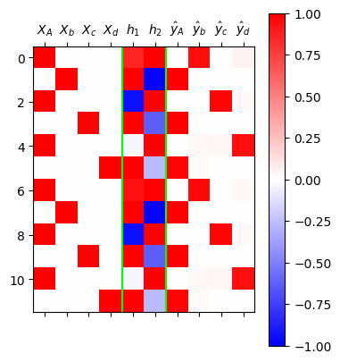

import torch
import pandas as pd
import matplotlib.pyplot as plt📘 Note Format Guide
This format serves as a structured guide for organizing lecture content, personal interpretation, experiments, and study-related questions.
| Type | What It Means | When I Use It |
|---|---|---|
| 📝 Lecture | Original material from the professor’s notes | When I’m referencing core concepts or provided code |
| 🗣️ In-Class Note | Verbal explanations shared during the lecture | When I want to record something the professor said in class but didn’t include in the official notes |
| ✍️ My Note | My thoughts, interpretations, or additional explanations | When I reflect on or explain something in my own words |
| 🔬 Experiment | Code I tried out or changed to explore further | When I test variations or go beyond the original example |
| ❓ Question | Questions I had while studying | When I want to revisit or research something more deeply |
📝 🗣️ ✍️ 🔬 ❓
1. 강의노트 원본 및 영상 링크 📝
2. Imports 📝
3. 예비학습 📝
A. 파이토치의 유연성
- 아래는 엄밀한 의미에서는 계산불가능하지만 파이토치는 그냥 해준다.
🗣️(
x = torch.randn(5)
xtensor([-0.0979, -0.2255, 0.5850, -1.9592, -1.0268])x = torch.randn(5) # length 5 vector
W = torch.randn(5,1) # 5,1 matrix
x @ W # (??,5) @ (5,1) 이 아니지만 해줌
# vector를 알아서 (1,5)로 해석해서tensor([0.7001]))🗣️
x = torch.randn(5)
W = torch.randn(5,1)
x@W tensor([5.5723])- 이와 유사하게 아래도 엄밀한 의미에서는 계산불가능하지만 파이토치는 그냥 해준다.
🗣️(
linr = torch.nn.Linear(5,1,bias=False)
linr.weightParameter containing:
tensor([[ 0.3078, 0.1778, -0.0975, 0.2778, 0.4209]], requires_grad=True)linr = torch.nn.Linear(5,1,bias=False)
linr.weight.data = W.T
linr(x)tensor([0.7001], grad_fn=<SqueezeBackward4>)x.shape # (1,5)가 아닌데도 계산 해줌torch.Size([5]))🗣️
linr = torch.nn.Linear(5,1,bias=False)
linr.weight.data = W.T
linr(x)tensor([5.5723], grad_fn=<SqueezeBackward4>)B. loss를 계산하는 다른방식
- 아래를 가정하자.
X = torch.randn(100,5)
y = torch.randn(100,1)
net = torch.nn.Linear(5,1)
loss_fn = torch.nn.MSELoss()🗣️(
X.shapetorch.Size([100, 5])y.shapetorch.Size([100, 1])net(X).shapetorch.Size([100, 1]))🗣️
- loss를 계산하는 방법1
yhat = net(X)
loss = loss_fn(yhat,y)
losstensor(1.0997, grad_fn=<MseLossBackward0>)- loss를 계산하는 방법2
🗣️(
X.shapetorch.Size([100, 5])X[0] # 첫번째 row (length 5 vector)tensor([ 0.0410, -0.7057, 0.3295, -0.2606, 1.2240])X[[0]] # (1,5)tensor([[ 0.0410, -0.7057, 0.3295, -0.2606, 1.2240]])net(X[0]) # yhat 0 로 볼 수 있음tensor([0.0924], grad_fn=<ViewBackward0>)yhat[0]tensor([0.0924], grad_fn=<SelectBackward0>)loss = 0
for i in range(100):
Xi, yi = X[i], y[i]
yi_hat = net(Xi)
loss = loss + loss_fn(yi_hat,yi) # loss 값이 계속 누적됨
loss # 100개의 observation에 대한 loss를 더한 값
loss/100 # MSE, 위와 동일tensor(1.0997, grad_fn=<DivBackward0>))🗣️
loss = 0
for i in range(100):
Xi, yi = X[i], y[i]
yi_hat = net(Xi)
loss = loss + loss_fn(yi_hat,yi)
loss/100tensor(1.6908, grad_fn=<DivBackward0>)4. 겹장(덧장) 📝
(생각1) \({\boldsymbol h}\)에 대한 이해
- \({\boldsymbol h}\)는 사실 문자열 “abc, abcd”들을 숫자로 바꾼 표현이라 해석할 수 있음. 즉 원핫인코딩과 다른 또 다른 형태의 숫자표현이라 해석할 수 있다.
- 사실 \({\boldsymbol h}\)는 원핫인코딩보다 약간 더 (1) 액기스만 남은 느낌 + (2) 숙성된 느낌을 준다
- (why1) \({\boldsymbol h}\)는 \({\boldsymbol x}\) 보다 \({\boldsymbol y}\)를 예측함에 좀 더 직접적인 역할을 한다. 즉 \({\boldsymbol x}\) 숫자보다 \({\boldsymbol h}\) 숫자가 잘 정리되어 있고 (차원이 낮고) 입력의 특징을 잘 정리한 (추천시스템의 MBTI처럼) 의미있는 숫자이다.
- (why2) \({\boldsymbol x}\)는 학습없이 그냥 얻어지는 숫자표현이지만, \({\boldsymbol h}\)는 학습을 통하여 고치고 고치고 고친 숫자표현이다.
결론: 사실 \({\boldsymbol h}\)는 잘 숙성되어있는 입력정보 \({\boldsymbol x}\) 그 자체로 해석 할 수 있다.
(생각2) 수백년전통을 이어가는 방법
🗣️(
x ---> h
콩물 ---> 간장
위처럼 하면 오래된 간장의 맛이 사라짐
x1 ---> h1 # 첫번째 observation
x2,h1 ---> h2
x3,h2 ---> h3 # h2에는 h1도 포함됨
...
h100
숙성: linear transform + tanh
숙성 과 조리의 weight를 각각 학습하면 됨)🗣️
“1리터에 500만원에 낙찰된 적 있습니다.”
“2kg에 1억원 정도 추산됩니다.”
“20여 종 종자장을 블렌딩해 100ml에 5000만원씩 분양 예정입니다.”
모두 씨간장(종자장) 가격에 관한 실제 일화다.
(중략...)
위스키나 와인처럼 블렌딩을 하기도 한다.
새로 담근 간장에 씨간장을 넣거나, 씨간장독에 햇간장을 넣어 맛을 유지하기도 한다.
이를 겹장(또는 덧장)이라 한다.
몇몇 종갓집에선 씨간장 잇기를 몇백 년째 해오고 있다.
매년 새로 간장을 담가야 이어갈 수 있으니 불씨 꺼트리지 않는 것처럼 굉장히 어려운 일이다.
이렇게 하는 이유는 집집마다 내려오는 고유 장맛을 잃지 않기 위함이다.
씨간장이란 그만큼 소중한 주방의 자산이며 정체성이다.덧장: 새로운간장을 만들때, 옛날간장을 섞어서 만듦
* 기존방식 - \(\text{콩물} \overset{\text{숙성}}{\longrightarrow} \text{간장}\)
* 수백년 전통의 간장맛을 유지하는 방식
- \(\text{콩물}_1 \overset{\text{숙성}}{\longrightarrow} \text{간장}_1\)
- \(\text{콩물}_2, \text{간장}_1 \overset{\text{숙성}}{\longrightarrow} \text{간장}_2\)
- \(\text{콩물}_3, \text{간장}_2 \overset{\text{숙성}}{\longrightarrow} \text{간장}_3\)
* 수백년 전통의 간장맛을 유지하면서 조리를 한다면?
- \(\text{콩물}_1 \overset{\text{숙성}}{\longrightarrow} \text{간장}_1 \overset{\text{조리}}{\longrightarrow} \text{간장계란밥}_1\)
- \(\text{콩물}_2, \text{간장}_1 \overset{\text{숙성}}{\longrightarrow} \text{간장}_2 \overset{\text{조리}}{\longrightarrow} \text{간장계란밥}_2\)
- \(\text{콩물}_3, \text{간장}_2 \overset{\text{숙성}}{\longrightarrow} \text{간장}_3 \overset{\text{조리}}{\longrightarrow} \text{간장계란밥}_3\)
점점 맛있는 간장계란밥이 탄생함
* 알고리즘의 편의상 아래와 같이 생각해도 무방
- \(\text{콩물}_1, \text{간장}_0 \overset{\text{숙성}}{\longrightarrow} \text{간장}_1 \overset{\text{조리}}{\longrightarrow} \text{간장계란밥}_1\), \(\text{간장}_0=\text{맹물}\)
- \(\text{콩물}_2, \text{간장}_1 \overset{\text{숙성}}{\longrightarrow} \text{간장}_2 \overset{\text{조리}}{\longrightarrow} \text{간장계란밥}_2\)
- \(\text{콩물}_3, \text{간장}_2 \overset{\text{숙성}}{\longrightarrow} \text{간장}_3 \overset{\text{조리}}{\longrightarrow} \text{간장계란밥}_3\)
아이디어
* 수백년 전통의 간장맛을 유지하면서 조리하는 과정을 수식으로? (콩물을 \(x\)로, 간장을 \(h\)로!!)
- \(\boldsymbol{x}_1, \boldsymbol{h}_0 \overset{\text{숙성}}{\longrightarrow} \boldsymbol{h}_1 \overset{\text{조리}}{\longrightarrow} \hat{\boldsymbol y}_1\)
- \(\boldsymbol{x}_2, \boldsymbol{h}_1 \overset{\text{숙성}}{\longrightarrow} \boldsymbol{h}_2 \overset{\text{조리}}{\longrightarrow} \hat{\boldsymbol y}_2\)
- \(\boldsymbol{x}_3, \boldsymbol{h}_2 \overset{\text{숙성}}{\longrightarrow} \boldsymbol{h}_3 \overset{\text{조리}}{\longrightarrow} \hat{\boldsymbol y}_3\)
이제 우리가 배울것은 (1) “\(\text{콩물}_{t}\)”와 “\(\text{간장}_{t-1}\)”로 “\(\text{간장}_t\)”를 숙성하는 방법 (2) “\(\text{간장}_t\)”로 “\(\text{간장계란밥}_t\)를 조리하는 방법이다
즉 숙성담당 네트워크와 조리담당 네트워크를 각각 만들어 학습하면 된다.
5. rNNCell 📝
🗣️(
L: X의 length
H_in: input dimension
H_out: output dimension
Q: 출력 dimension # 강의 예제의 경우 H_in과 동일
시점 t 하나로 고정
Xt, ht, yt: length가 ??인 vector)🗣️
A. 차원의 정리
- 기본버전
- X.shape = \((L, H_{in})\)
- h.shape = \((L, H_{out})\)
- y.shape = \((L, Q)\)
- Xt.shape = \((H_{in}, )\)
- ht.shape = \((H_{out},)\)
- yt.shape = \((Q,)\)
- AbAcAd를 2차원공간에 임베딩하려고 할 경우.
- X.shape = \((L, H_{in})\) = \((L,4)\)
- h.shape = \((L, H_{out})\) = \((L,2)\)
- y.shape = \((L, Q)\) = \((L,4)\)
- Xt.shape = \((H_{in}, )\) = \((4,)\)
- ht.shape = \((H_{out},)\) = \((2,)\)
- yt.shape = \((Q,)\) = \((4,)\)
B. 순환신경망 알고리즘
🗣️(
# step1
첫 간장은 없기 때문에 맹물
2차원 공간으로 embedding 하기 때문에 [0,0]
# step2 숙성
linear transform + tanh
X_t = [ o o o o ] h_t = [o o]
[ o o o o ; o o ] -- linr --> [o o]
[ o o o o ; o o ] @ W = [o o]
1x6 6x2 1x2
1x6 => 1x4 1x2
6x2 => 4x2 2x2 로 쪼갠 후
1x4 @ 4x2 + 1x2 @ 2x2 를 하면 위의 결과와 동일
# step3 조리
h --> yhat
(n,2) --> (n,4) 인 linear transform 설계 후 softmax
# step4 반복x = torch.randn(4)
h = torch.randn(2)
x, h(tensor([-0.4916, 0.7223, 0.6788, 1.4259]), tensor([ 0.9848, -0.8259]))torch.concat([x,h])tensor([-0.4916, 0.7223, 0.6788, 1.4259, 0.9848, -0.8259])linr = torch.nn.Linear(6,2,bias=False)linr(torch.concat([x,h]))tensor([ 1.4714, -0.6181], grad_fn=<SqueezeBackward4>)linr.weight # 곱할 때는 (6,2)로 transpose 되어야 함Parameter containing:
tensor([[-0.3810, 0.3707, 0.3601, 0.4080, 0.4068, 0.2549],
[-0.1886, -0.3714, -0.2125, -0.2126, -0.0715, -0.0910]],
requires_grad=True)torch.concat([x,h]) @ linr.weight.Ttensor([ 1.4714, -0.6181], grad_fn=<SqueezeBackward4>)linr.weight.T.shapetorch.Size([6, 2])x@linr.weight.T[:4] + h@linr.weight.T[4:]tensor([ 1.4714, -0.6181], grad_fn=<AddBackward0>))🗣️
# 버전1
step 1: 일단 \(\text{간장}_0(={\boldsymbol h}_0)\)을 맹물로 초기화 한다. 즉 아래를 수행한다.
\[{\boldsymbol h}_0 = [0,0]\]
step 2: \(\text{콩물}_1(={\boldsymbol x}_1)\), \(\text{간장}_0(={\boldsymbol h}_0)\) 을 이용하여 \(\text{간장}_1(={\boldsymbol h}_1)\)을 숙성한다. 즉 아래를 수행한다. (즉 콩물과 오래된 간장을 합친뒤 숙성)
\[{\boldsymbol h}_1= \tanh({\boldsymbol x}_1{\bf W}_{ih}+{\boldsymbol h}_0{\bf W}_{hh}+{\boldsymbol b}_{ih}+{\boldsymbol b}_{hh})\]
Note
아래의 식이 성립함을 관찰하자.
\[\begin{bmatrix} {\boldsymbol x}_1 & {\boldsymbol h}_{0} \end{bmatrix}\begin{bmatrix} {\bf W}_{ih} \\ {\bf W}_{hh}\end{bmatrix}={\boldsymbol x}_1{\bf W}_{ih}+{\boldsymbol h}_0{\bf W}_{hh}\]
step 3: \(\text{간장}_1\)을 이용하여 \(\text{간장계란밥}_1\)을 만든다. 그리고 \(\hat{\boldsymbol y}_1\)을 만든다.
\[{\boldsymbol o}_1= {\bf W}_{ho}{\boldsymbol h}_1+{\boldsymbol b}_{ho}\]
\[\hat{\boldsymbol y}_1 = \text{soft}({\boldsymbol o}_1)\]
step 4: \(t=2,3,4,5,\dots,L\) 에 대하여 step2-3을 반복한다.
#
# 버전2
init \(\boldsymbol{h}_0\)
for \(t\) in \(1:L\)
- \({\boldsymbol h}_t= \tanh({\boldsymbol x}_t{\bf W}_{ih}+{\boldsymbol h}_{t-1}{\bf W}_{hh}+{\boldsymbol b}_{ih}+{\boldsymbol b}_{hh})\)
- \({\boldsymbol o}_t= {\bf W}_{ho}{\boldsymbol h}_t+{\boldsymbol b}_{ho}\)
- \(\hat{\boldsymbol y}_t = \text{soft}({\boldsymbol o}_t)\)
#
# 버전3
ht = [0,0]
for t in 1:T
ht = tanh(linr(xt)+linr(ht))
ot = linr(ht)
yt_hat = soft(ot)- 코드상으로는 \(h_t\)와 \(h_{t-1}\)의 구분이 교모하게 사라진다. (그래서 오히려 좋아)
#
- 따라서 실질적인 전체코드는 아래와 같은 방식으로 구현할 수 있다.
class rNNCell(torch.nn.Module):
def __init__(self):
super().__init__()
self.linr1 = torch.nn.Linear(4,2)
self.linr2 = torch.nn.Linear(2,2)
self.tanh = torch.nn.Tanh()
def forward(self,Xt,ht):
ht = self.tanh(self.linr1(Xt)+self.linr2(ht))
return ht
ht = [0,0]
rnncell = rNNCell()
for t in 1:L
ht = rnncell(Xt,ht) #tanh(linr(Xt)+linr(ht))
ot = cook(ht)
yt_hat = soft(ot)C. rNNCell
- 데이터정리
txt = list('AbAcAd'*50)
txt[:10]['A', 'b', 'A', 'c', 'A', 'd', 'A', 'b', 'A', 'c']df_train = pd.DataFrame({'x':txt[:-1], 'y':txt[1:]})
df_train[:5]| x | y | |
|---|---|---|
| 0 | A | b |
| 1 | b | A |
| 2 | A | c |
| 3 | c | A |
| 4 | A | d |
x = torch.tensor(df_train.x.map({'A':0,'b':1,'c':2,'d':3}))
y = torch.tensor(df_train.y.map({'A':0,'b':1,'c':2,'d':3}))
X = torch.nn.functional.one_hot(x).float()
y = torch.nn.functional.one_hot(y).float()X.shape, y.shape(torch.Size([299, 4]), torch.Size([299, 4]))🗣️(
- 저번과 다르게 one hot encoding을 시켜 놓음
ht = torch.zeros(2)httensor([0., 0.])class rNNCell(torch.nn.Module):
def __init__(self):
super().__init__()
self.i2h = torch.nn.Linear(4,2) # x의 input을 i로 하면 i -> h
self.h2h = torch.nn.Linear(2,2) # 이전 간장 -> 다음 간장 (h -> h)
self.tanh = torch.nn.Tanh()
def forward(self,Xt,ht):
ht = self.tanh(self.i2h(Xt)+self.h2h(ht))
return ht
torch.manual_seed(43052) # 초기값을 random으로 하면 학습이 잘 안됨
rnncell = rNNCell()
cook = torch.nn.Linear(2,4)
loss_fn = torch.nn.CrossEntropyLoss()
optimizr = torch.optim.Adam(list(rnncell.parameters())+list(cook.parameters()), lr=0.1)
#---#
L = len(X)
for epoc in range(200):
#1~2
loss = 0
ht = torch.zeros(2) # 맹물
for t in range(L):
Xt, yt = X[t], y[t]
ht = rnncell(Xt,ht) #tanh(linr(Xt)+linr(ht))
ot = cook(ht)
# yt_hat = soft(ot) # CrossEntropyLoss이므로 생략
loss = loss + loss_fn(ot,yt)
loss = loss/L
#3
loss.backward()
#4
optimizr.step()
optimizr.zero_grad()yhat을 구하고 싶음
yhat를 구하기 위해 cook(h)를 해야하는데 h가 저장되어 있지 않음
h의 dimension은 (L,2)가 되어야 함- h 복원
h = torch.zeros(L,2) # randn도 가능 (아무거나)
water = torch.zeros(2) # 맹물
h[0] = rnncell(X[0],water) # 첫간장
for t in range(1,L): # 첫 간장은 만들었으므로 L-1까지
h[t] = rnncell(X[t],h[t-1])
h.shapetorch.Size([299, 2])yhat = torch.nn.functional.softmax(cook(h), dim=1)yhattensor([[4.1978e-03, 9.4555e-01, 1.9557e-06, 5.0253e-02],
[9.9994e-01, 5.5569e-05, 8.4751e-10, 1.3143e-06],
[2.1349e-07, 1.1345e-06, 9.7019e-01, 2.9806e-02],
...,
[2.1339e-07, 1.1339e-06, 9.7020e-01, 2.9798e-02],
[9.9901e-01, 9.6573e-04, 6.9303e-09, 2.1945e-05],
[7.2919e-04, 2.5484e-02, 3.3011e-02, 9.4078e-01]],
grad_fn=<SoftmaxBackward0>)mat = torch.concat([X,h,yhat],axis=1).data
plt.matshow(mat[:12],cmap="bwr",vmin=-1, vmax=1)
plt.colorbar()
plt.xticks(
range(10),
[r"$X_A$", r"$X_b$",r"$X_c$",r"$X_d$",
r'$h_1$',r'$h_2$',
r'$\hat{y}_A$',r'$\hat{y}_b$',r'$\hat{y}_c$',r'$\hat{y}_d$']
);
plt.axvline(x=3.5,color='lime')
plt.axvline(x=5.5,color='lime')
- 학습이 잘 되었음
- yhat 값 분석
yhat[:12].datatensor([[4.1978e-03, 9.4555e-01, 1.9557e-06, 5.0253e-02],
[9.9994e-01, 5.5569e-05, 8.4751e-10, 1.3143e-06],
[2.1349e-07, 1.1345e-06, 9.7019e-01, 2.9806e-02],
[9.9901e-01, 9.6565e-04, 6.9299e-09, 2.1943e-05],
[7.2900e-04, 2.5475e-02, 3.3024e-02, 9.4077e-01],
[9.8337e-01, 1.6274e-02, 5.4970e-08, 3.5466e-04],
[3.7563e-03, 9.6547e-01, 7.0608e-07, 3.0775e-02],
[9.9994e-01, 5.5540e-05, 8.4706e-10, 1.3136e-06],
[2.1339e-07, 1.1339e-06, 9.7020e-01, 2.9798e-02],
[9.9901e-01, 9.6573e-04, 6.9303e-09, 2.1945e-05],
[7.2919e-04, 2.5484e-02, 3.3011e-02, 9.4078e-01],
[9.8337e-01, 1.6271e-02, 5.4963e-08, 3.5459e-04]])yhat[:12].data.numpy()array([[4.1977889e-03, 9.4554716e-01, 1.9556610e-06, 5.0253034e-02],
[9.9994314e-01, 5.5569450e-05, 8.4751423e-10, 1.3143476e-06],
[2.1348868e-07, 1.1345173e-06, 9.7019231e-01, 2.9806266e-02],
[9.9901247e-01, 9.6564920e-04, 6.9298882e-09, 2.1942731e-05],
[7.2899810e-04, 2.5475012e-02, 3.3023510e-02, 9.4077253e-01],
[9.8337126e-01, 1.6274208e-02, 5.4970148e-08, 3.5465817e-04],
[3.7563448e-03, 9.6546805e-01, 7.0607661e-07, 3.0774901e-02],
[9.9994314e-01, 5.5540364e-05, 8.4706009e-10, 1.3135694e-06],
[2.1339210e-07, 1.1339207e-06, 9.7020018e-01, 2.9798379e-02],
[9.9901235e-01, 9.6573064e-04, 6.9303234e-09, 2.1944570e-05],
[7.2918943e-04, 2.5484391e-02, 3.3011049e-02, 9.4077539e-01],
[9.8337412e-01, 1.6271213e-02, 5.4962758e-08, 3.5459397e-04]],
dtype=float32)yhat[:12].data.numpy().round(3)array([[0.004, 0.946, 0. , 0.05 ],
[1. , 0. , 0. , 0. ],
[0. , 0. , 0.97 , 0.03 ],
[0.999, 0.001, 0. , 0. ],
[0.001, 0.025, 0.033, 0.941],
[0.983, 0.016, 0. , 0. ],
[0.004, 0.965, 0. , 0.031],
[1. , 0. , 0. , 0. ],
[0. , 0. , 0.97 , 0.03 ],
[0.999, 0.001, 0. , 0. ],
[0.001, 0.025, 0.033, 0.941],
[0.983, 0.016, 0. , 0. ]], dtype=float32)0.946 => 0.965 조금이지만 뒤로 갈수록 성능이 좋음
- h 분석
h.shapetorch.Size([299, 2])h.T.shapetorch.Size([2, 299])- 위의 시각화 분석
- row0에서는 A를 빨강,빨강으로
- row2에서는 A를 파랑,빨강으로 매핑하고 있음
- 즉, 컴퓨터가 문자는 같지만 다른 문맥으로 파악하고 있음
- b,c,d는 비슷하긴하나(색깔 차이) 약간의 문맥 차이가 있다고 파악하고 있음
h1, h2 = h.T.datah1[0] # 첫번째 Atensor(0.8585)h1[::6] # A에 대한 첫번째 설정값tensor([0.8585, 0.9286, 0.9286, 0.9286, 0.9286, 0.9286, 0.9286, 0.9286, 0.9286,
0.9286, 0.9286, 0.9286, 0.9286, 0.9286, 0.9286, 0.9286, 0.9286, 0.9286,
0.9286, 0.9286, 0.9286, 0.9286, 0.9286, 0.9286, 0.9286, 0.9286, 0.9286,
0.9286, 0.9286, 0.9286, 0.9286, 0.9286, 0.9286, 0.9286, 0.9286, 0.9286,
0.9286, 0.9286, 0.9286, 0.9286, 0.9286, 0.9286, 0.9286, 0.9286, 0.9286,
0.9286, 0.9286, 0.9286, 0.9286, 0.9286])h2[::6] # A에 대한 두번째 설정값tensor([0.9931, 0.9911, 0.9911, 0.9911, 0.9911, 0.9911, 0.9911, 0.9911, 0.9911,
0.9911, 0.9911, 0.9911, 0.9911, 0.9911, 0.9911, 0.9911, 0.9911, 0.9911,
0.9911, 0.9911, 0.9911, 0.9911, 0.9911, 0.9911, 0.9911, 0.9911, 0.9911,
0.9911, 0.9911, 0.9911, 0.9911, 0.9911, 0.9911, 0.9911, 0.9911, 0.9911,
0.9911, 0.9911, 0.9911, 0.9911, 0.9911, 0.9911, 0.9911, 0.9911, 0.9911,
0.9911, 0.9911, 0.9911, 0.9911, 0.9911])plt.plot(h1[::6], h2[::6], 'o') # A
plt.plot(h1[::6], h2[::6],'o', label="first A")
plt.plot(h1[1::6], h2[1::6],'x', label="b")
plt.plot(h1[2::6], h2[2::6],'o', label="second A")
plt.plot(h1[3::6], h2[3::6],'x', label="c")
plt.plot(h1[4::6], h2[4::6],'o', label="third A")
plt.plot(h1[5::6], h2[5::6],'x', label="d")
plt.legend()
plt.plot(h1[::6], h2[::6],'o', label="first A",alpha=0.1)
plt.plot(h1[1::6], h2[1::6],'x', label="b")
plt.plot(h1[2::6], h2[2::6],'o', label="second A")
plt.plot(h1[3::6], h2[3::6],'x', label="c")
plt.plot(h1[4::6], h2[4::6],'o', label="third A")
plt.plot(h1[5::6], h2[5::6],'x', label="d")
plt.legend()
- first A의 희미한 부분은 처음에 학습이 잘 안된 부분
- 문맥에 따라 A가 3개로 해석되므로 실질적으로는 6개의 문자
- 6개의 문자를 2차원으로 embedding했을 때는 잘 안됨 (잘 되는 경우로 seed 고정)
- first A, second A, third A는 서로 멀리 떨어져 있음 (컴퓨터가 서로 다르다고 해석)
- b, c, d는 붙어 있음 (컴퓨터가 해석할 때는 비슷하게 보임)
- 물론 A / bcd 크게 두 개의 그룹으로 볼 수도 있음
)🗣️
- 순환신경망으로 적합
class rNNCell(torch.nn.Module):
def __init__(self):
super().__init__()
self.i2h = torch.nn.Linear(4,2)
self.h2h = torch.nn.Linear(2,2)
self.tanh = torch.nn.Tanh()
def forward(self,Xt,ht):
return self.tanh(self.i2h(Xt)+self.h2h(ht))
torch.manual_seed(43052)
rnncell = rNNCell()
cook = torch.nn.Linear(2,4)
loss_fn = torch.nn.CrossEntropyLoss()
optimizr = torch.optim.Adam(list(rnncell.parameters())+list(cook.parameters()),lr=0.1)
#---#
L = len(X)
for epoc in range(200):
#1~2
loss = 0
ht = torch.zeros(2) # 맹물
for t in range(L):
Xt, yt = X[t],y[t]
ht = rnncell(Xt,ht) #tanh(linr(xt)+linr(ht))
ot = cook(ht)
#yt_hat = soft(ot)
loss = loss + loss_fn(ot, yt)
loss = loss/L
#3
loss.backward()
#4
optimizr.step()
optimizr.zero_grad()- 결과 확인 및 시각화
h = torch.zeros(L,2)
water = torch.zeros(2)
h[0] = rnncell(X[0],water)
for t in range(1,L):
h[t] = rnncell(X[t],h[t-1])
h.shapetorch.Size([299, 2])yhat = torch.nn.functional.softmax(cook(h),dim=1)
yhattensor([[4.1978e-03, 9.4555e-01, 1.9557e-06, 5.0253e-02],
[9.9994e-01, 5.5569e-05, 8.4751e-10, 1.3143e-06],
[2.1349e-07, 1.1345e-06, 9.7019e-01, 2.9806e-02],
...,
[2.1339e-07, 1.1339e-06, 9.7020e-01, 2.9798e-02],
[9.9901e-01, 9.6573e-04, 6.9303e-09, 2.1945e-05],
[7.2919e-04, 2.5484e-02, 3.3011e-02, 9.4078e-01]],
grad_fn=<SoftmaxBackward0>)mat = torch.concat([X,h,yhat],axis=1).data
plt.matshow(mat[:12],cmap="bwr",vmin=-1, vmax=1)
plt.colorbar()
plt.xticks(
range(10),
[r"$X_A$", r"$X_b$",r"$X_c$",r"$X_d$",
r'$h_1$',r'$h_2$',
r'$\hat{y}_A$',r'$\hat{y}_b$',r'$\hat{y}_c$',r'$\hat{y}_d$']
);
plt.axvline(x=3.5,color='lime')
plt.axvline(x=5.5,color='lime')
- yhat 값 분석
yhat[:12].data.numpy().round(3)array([[0.004, 0.946, 0. , 0.05 ],
[1. , 0. , 0. , 0. ],
[0. , 0. , 0.97 , 0.03 ],
[0.999, 0.001, 0. , 0. ],
[0.001, 0.025, 0.033, 0.941],
[0.983, 0.016, 0. , 0. ],
[0.004, 0.965, 0. , 0.031],
[1. , 0. , 0. , 0. ],
[0. , 0. , 0.97 , 0.03 ],
[0.999, 0.001, 0. , 0. ],
[0.001, 0.025, 0.033, 0.941],
[0.983, 0.016, 0. , 0. ]], dtype=float32)- 미세하지만 뒤로갈수록 좀 더 성능이 좋다.
- h1,h2 분석 (= 임베딩스페이스 분석)
h1,h2 = h.T.dataplt.plot(h1[::6], h2[::6],'o', label="first A",alpha=0.1)
plt.plot(h1[1::6], h2[1::6],'x', label="b")
plt.plot(h1[2::6], h2[2::6],'o', label="second A")
plt.plot(h1[3::6], h2[3::6],'x', label="c")
plt.plot(h1[4::6], h2[4::6],'o', label="third A")
plt.plot(h1[5::6], h2[5::6],'x', label="d")
plt.legend()